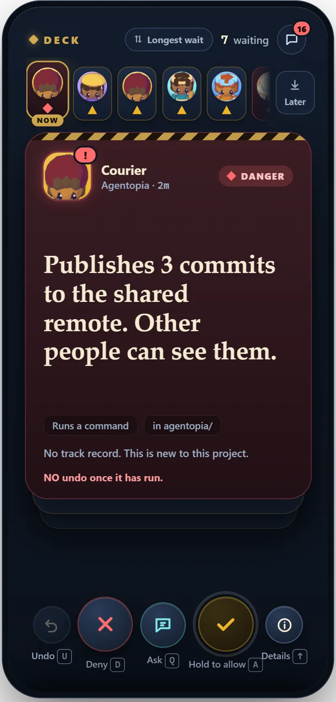
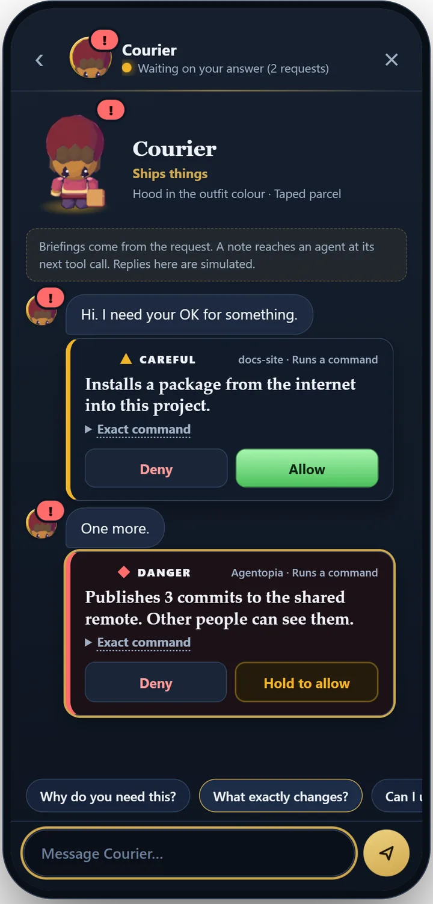

Preview Built by Dr. Xanqunnes
A command post for your Claude Code agents.
See every agent at work on one live map. Answer what they ask, one card at a time. Slow down only for the requests that can hurt.
The footage on this page is a demo. The agents and chats in it are simulated.

The Deck, shown with simulated agents.
Every extra session is another place waiting for you.
Run a few Claude Code sessions at once and the questions pile up across terminals. Most are routine. A few are not.
Agentopia gathers them in one stack and marks each by how much damage it could do. The routine ones take a second. The rest get your attention.
What it does
A map, a deck and a chat.
The Deck
One card at a time, each written in plain language. Allow it, deny it, ask about it, or save it for later.
Bundles. Matching requests arrive together, so one tap answers both.Rules. Allow the same thing often enough and it offers to stop asking. You can switch a rule off any time.Undo. You get five seconds to take an answer back.
The live map
Every agent has a place and a status. See who is working, who is thinking and who is waiting on you, across every project.
Ask before you decide
Not sure what a request does? Open a chat with the agent and ask. The replies in the demo are simulated.

How it sorts requests
Every request wears one of three labels.
The label comes from what the command can do. It also decides how the card asks for your answer.
Shows which files changed. Changes nothing.
A tap or a swipe allows it. The card shows how often you have allowed it before.
Installs a package from the internet into this project.
Read it first. Every card can show the exact command that will run.
Publishes 3 commits to the shared remote. Other people can see them.
No undo once it has run.
Needs a one-second hold. A tap or a swipe will not do it.
The wording above comes from the demo’s sample data.
Trailer
See it in 37 seconds.
The trailer goes through the map, the Deck and the chat. Everything in it is demo footage with simulated agents and made-up chats. It has no sound.
Download the trailer
Status
Where it stands.
Agentopia is a preview. This is what works and what does not yet.
You can see This demo: the map, the Deck and the chat, running on simulated agents.
Early testing Reading real Claude Code sessions through hooks, on the developer’s own computer.
Not ready Answering real requests from the Deck. In the demo, the Deck and the chat run on simulated data.
Not published The source code. This site is all that is published.
Early access
Want a demo seat when they open?
Demo seats will be limited. Leave your email and I will write when they open. The questions help me build the right thing first.
Prefer LinkedIn? Message Dr. Xanqunnes .
A short Google Form. It asks for:
Your email
How many Claude Code sessions you run at once
What it should do first Optional
Your biggest problem running several agents Optional
Tell me when demo seats open
Opens Google Forms in a new tab. Google stores the answers under its own privacy policy. I use your email only to write to you about Agentopia. Reply “remove” to any message and I will delete it.